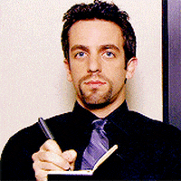

The Office Character Generator
You are Jim!
You zodiac sign is Leo. People born under the sign of Leo are natural born leaders. They are dramatic, creative, self-confident, dominant and extremely difficult to resist, able to achieve anything they want to in any area of life they commit to.
You are Pam!
Your zodiac sign is Aquarius. Aquarius-born are shy and quiet, but on the other hand they can be eccentric and energetic.
You are Michael!
Your zodiac sign is Sagittarius. Curious and energetic, Sagittarius is one of the biggest travelers among all zodiac signs. Their open mind and philosophical view motivates them to wander around the world in search of the meaning of life.
You are Dwight!
Your zodiac sign is Capricorn, a sign that represents time and responsibility. Capricorns are traditional and often very serious by nature.
You are Angela!
Your zodiac sign is Scorpio. Scorpio-born are passionate and assertive people. They are determined and decisive, and will research until they find out the truth.
You are Kevin!
Your zodiac sign is Taurus. Practical and well-grounded, Taurus is the sign that harvests the fruits of labor.
You are Meredith!
Your zodiac sign is Aries. Its representatives are naturally brave and rarely afraid of trial and risk. They possess youthful strength and energy, regardless of their age.

You are Phyllis!
Your zodiac sign is Virgo. Virgos are always paying attention to the smallest details and their deep sense of humanity makes them one of the most careful signs of the zodiac.
You are Stanley!
Your zodiac sign is Cancer. Deeply intuitive and sentimental, Cancer can be one of the most challenging zodiac signs to get to know. They are very emotional and sensitive, and care deeply about matters of the family and their home.
You are Ryan!
Your zodiac sign is Gemini. Gemini tend to want to be constantly busy and entertained, and hate being in one place too long.
You are Kelly!
Your zodiac sign is Pisces. Pisces are very friendly, so they often find themselves in a company of very different people.
You are Toby!
Your zodiac sign is Libra. Libras are ready to do nearly anything to avoid conflict, keeping the peace whenever possible.